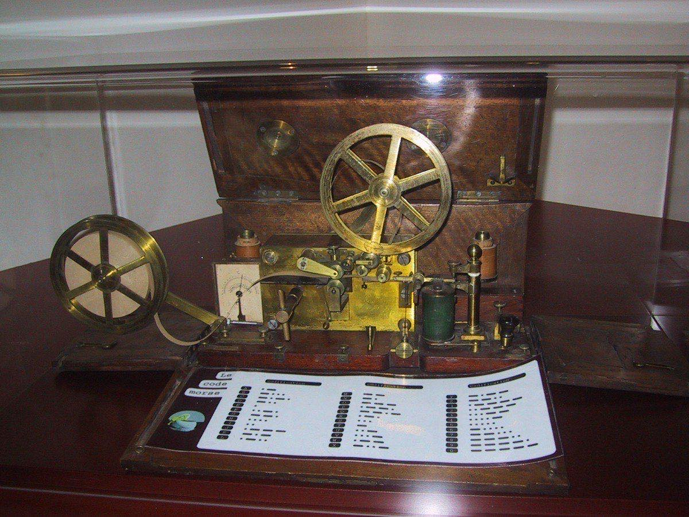
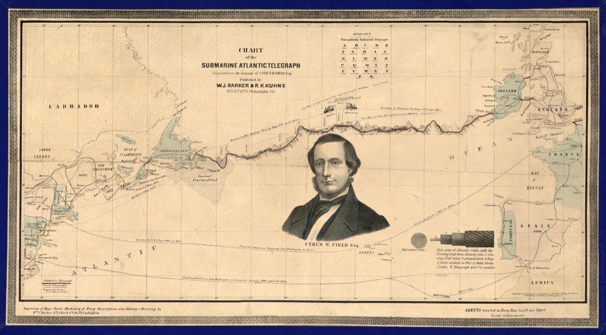
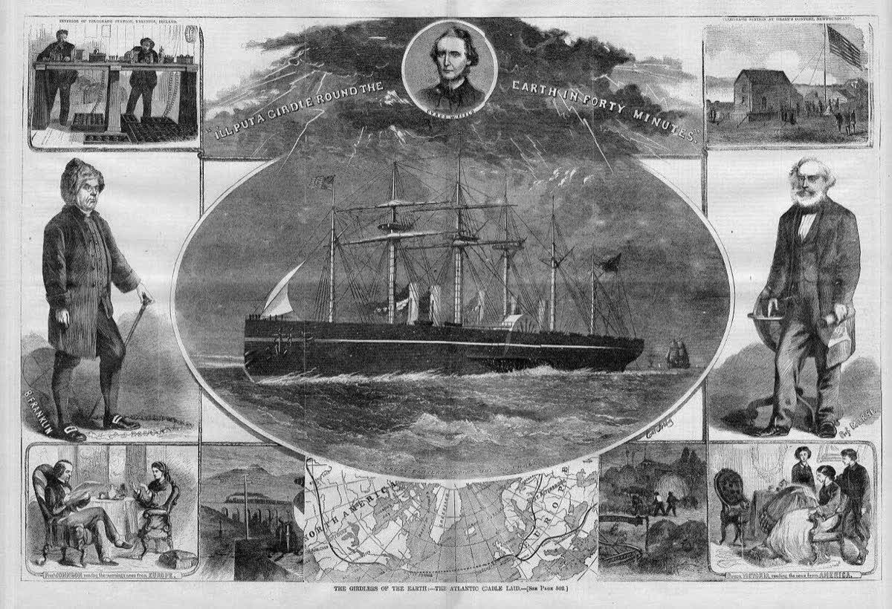

How Information Changed the World
Chapter Two
The Two-Thousand-Year Speed Limit
The Telegraph · 1840s–1860s
The Moment
It is May 24, 1844. A small wooden machine sits on a table in the basement of the United States Capitol building in Washington, D.C. Standing over it is a man named Samuel Morse — once a painter, now an inventor — who has spent fifteen years obsessed with a single question: could you make a copper wire carry an electrical signal, and could that signal carry words?
Today is the day he finds out.
Forty miles away, in a Baltimore railroad station, his assistant Alfred Vail is waiting with an identical machine. The two machines are connected by a single thin wire, strung between wooden poles along the railroad tracks the whole way from Washington.
Morse rests his fingers on a small brass key. He has been allowed to choose the first words. He has thought about them for weeks.
He taps. Long, short. Short, short. Short, short, short.
Forty miles away, Vail's machine clicks back the same rhythm. Letter by letter, Vail writes down what arrives: What hath God wrought?
The phrase is from the Bible. It is not actually a question. It is an amazed exclamation that roughly means: look at what God has just allowed us to do. Morse is not asking. He is announcing.
For about two thousand years, every piece of information that had ever moved on planet Earth had moved at the speed of a human body. A runner. A horse. A ship in the wind. The fastest news that a Roman emperor ever got and the fastest news that Napoleon ever got moved at roughly the same speed: about thirty miles per hour, on a very good day.
In that small Capitol basement in 1844, the speed limit broke.

Before
Try to imagine what it actually meant to live with a two-thousand-year speed limit.
If you are a merchant in London in 1843 and you want to know whether a shipment of cotton has arrived safely in New York, you can do one of two things. You can send a letter on a ship across the Atlantic, and wait three or four weeks for it to arrive. Then you can wait three or four more weeks for the answer to sail back. Two months for a single yes or no.
Or you can simply accept that you will not know.
If you are a general fighting two hundred miles from your capital, the first news your government gets about whether you won or lost the battle is a sweating rider on a sweating horse, four days later. The battle is over. The decision was made without you.
For two thousand years, this was what news looked like. A piece of information was a thing — a letter, a printed page, a memory inside a person's head. To move information from London to Paris, you moved a body that knew it. To move it from London to New York, you put it on a boat.
This made information slow. It also made information scarce — meaning, rare. Whoever happened to know something first had a real advantage over everyone else. Most ordinary people did not know what was happening in the next town. Almost no one knew what was happening in the next country.
That whole arrangement was about to end.
The Tech
The trick was electricity.
Scientists had known for decades that an electric current running through a wire could be switched on and off, and that the on-off pulses could be detected at the other end. Morse's contribution was a code: a system in which combinations of short pulses (called dots) and long pulses (called dashes) stood for letters of the alphabet. Dot-dash meant A. Dash-dot-dot-dot meant B. Dot-dot-dot meant S. A single dash meant T.
His machine was simple. On one end was a brass key — basically a button that completed a circuit each time you pressed it. On the other end was a receiver that registered each pulse: a click, a tap, sometimes a mark scratched onto a strip of moving paper tape. An operator at one end tapped letters in this new code; an operator at the other end translated the rhythm back into words.
In between, just a copper wire. As long as you could string the wire from one place to another — over poles, under rivers, eventually across oceans — you could send words at the speed of electricity. Almost instantly.
The system was called the telegraph, from old Greek words meaning "far-writing." Within a few years of Morse's 1844 demonstration, telegraph lines ran along most American railroads. Within a decade, they crisscrossed Europe. By 1860, a single message could leave New York and reach Chicago in minutes — a journey that, twenty years earlier, would have taken a week on horseback.

The Ripples
Then came the big one.
In 1858, an American businessman named Cyrus Field convinced governments and investors to attempt something that sounded nearly insane: lay a copper telegraph cable across the bottom of the Atlantic Ocean. Two ships, one from Ireland and one from Newfoundland, would meet in the middle, splice their cables together, and turn the connection on. If it worked, a message from London to New York would take not three weeks but three minutes.
It worked. For exactly three weeks.
The cable struggled from the start. Queen Victoria's 99-letter congratulatory message to U.S. President James Buchanan took more than seventeen hours to send — slow, fragile, but real. Then the cable failed entirely. Eight years later, in 1866, they tried again with a thicker, stronger cable. That one survived. It is the ancestor of every fiber-optic line on the ocean floor today.
The ripples spread fast.
Stock markets transformed almost overnight. A trader in London who knew the price of cotton in New York three minutes ago had an enormous advantage over a trader who knew the price three weeks ago. The financial centers of the world — Wall Street, the City of London — grew rich on the new speed.
The news transformed. By the 1860s, new wire services like the Associated Press were collecting stories from around the world and sending them by telegraph to thousands of newspapers at once. Newspapers stopped publishing news that was a month old and started publishing yesterday's events tomorrow morning.
War transformed. The American Civil War (1861–65) was the first war in which a president — Abraham Lincoln — could direct his generals hundreds of miles away while a battle was still being fought. Orders, requests, and lies could now travel at the speed of electricity.
Time itself transformed. Until the telegraph, every town set its clocks by the local sun. Noon in Boston and noon in New York were not the same moment, because the sun was not in the same place. The telegraph made this absurd: a train schedule could not work if every station ran on its own clock. So countries divided themselves into shared time zones — a 19th-century invention forced into existence by a 19th-century technology.
A British writer named Tom Standage once called the telegraph the "Victorian Internet." Almost every excited claim made about the internet in the 1990s — that it would bring world peace, end ignorance, unite humanity — had already been made, almost word for word, about the telegraph in the 1850s.
But ordinary people also lost things in this shift.
The town crier, who used to walk the streets shouting the latest news, became a curiosity. The weekly newspaper that came out every Saturday could not compete with the daily that printed wire-service stories from the night before. Whole categories of jobs — message-runners, slow couriers, certain kinds of traders whose entire advantage had been knowing a price slightly before everyone else — quietly disappeared.
And then, by the 1890s, the dark turn arrived.
The same telegraph that carried market prices also carried propaganda — information designed to push readers toward a particular feeling, usually fear or anger. American newspapers in the 1890s, especially those owned by William Randolph Hearst, used incoming wire stories about a Spanish-controlled Cuba to whip up war fever at home. Reporters in Havana telegraphed back lurid, sometimes invented atrocity stories. Hearst printed them. In 1898, the United States went to war with Spain — a war historians still argue about, but in which "yellow journalism" — sensational, wire-fed, often false stories — played a major part.
By the First World War (1914–18), telegraph lines had become the central nervous system of military propaganda. Every government rushed coded messages, planted news, and forged "intercepted" telegrams to manipulate public opinion at home and enemy decisions abroad.
The wire that had once carried What hath God wrought? now carried lies about who had started the war and how it should end.

The Pattern
The shape of this story will look familiar.
For about fifteen years — from 1844 to roughly 1860 — the telegraph was a miracle. Newspapers wrote about it the way they had written about Luther's pamphlets three centuries earlier: with awe, with fear, with predictions that this new technology would change everything about how humans lived together.
By the 1860s and 1870s, it had become ordinary. Telegraph wires were as common a sight as railroad tracks. Most cities had a telegraph office. Sending a wire was no more exciting than mailing a letter — slower, in fact, but cheaper.
By the 1890s, and certainly by the First World War, it was weaponized. Yellow journalism. Propaganda telegrams. Forged stories whipped across continents at the speed of electricity, used to start wars, vilify enemies, and move public opinion in ways ordinary citizens had no power to fact-check.
Miracle. Ordinary. Weapon.
The same shape that ran through Chapter 1. A new technology. A new century. Same arc.
Pattern Tracker
Chapter 2: The Telegraph
Now
We still live with the consequences of what Morse tapped out in 1844. The wires have changed shape. The shape of the arc has not.
Reflect
- Why was "What hath God wrought?" such a dramatic choice for the first telegraph message? What was Morse trying to say about what his invention meant?
- Tom Standage called the telegraph the "Victorian Internet." What does that comparison help us see clearly — and what does it risk hiding?